Incarnate · 2026
poems on perception, growth, and being
- you keep saying my name wrong
- how to hold light
- corridor in the asylum
- maybe they were moths
- to bee or not to bee
from the table of contents
Brand Designer & Visual Storyteller
I build identities with something to say. Working across design, motion, image and words, I create visual worlds with a distinct voice—and a reason behind every detail.
Selected work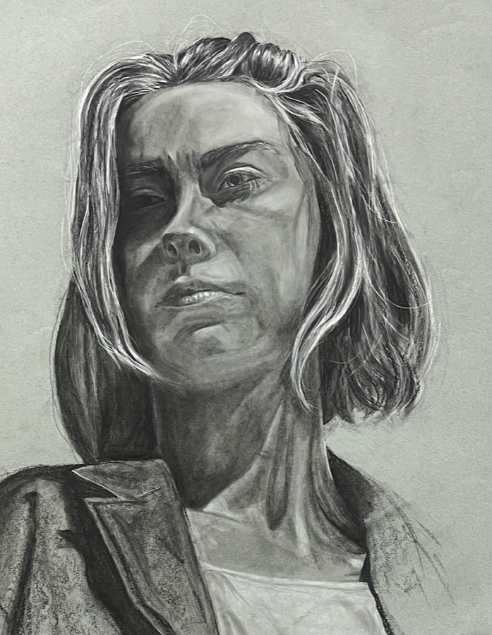
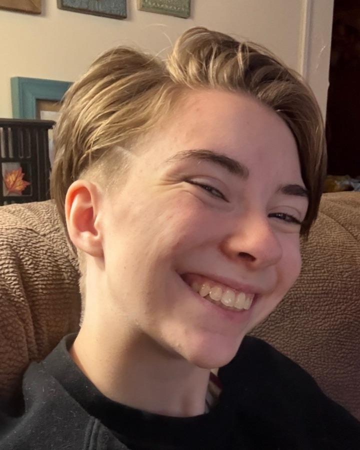
the person behind the work
“Storytelling tends to be the thread connecting everything.”
I don’t think of writing, art, and design as completely separate practices. They’re different ways of telling stories—of deciding what matters, what gets noticed, and how an idea reaches another person. My work tends to live somewhere between stories, comics, visual systems, character work, poetry, research, ephemera, and whatever scraps are currently covering my desk.
I like experimenting with mediums and moving between the digital and tangible, but storytelling tends to be the thread connecting everything. I want what I make to have a reason behind it and something underneath it to spark connection, curiosity, recognition, or simply make someone feel something.
— Addison
I make more than this.
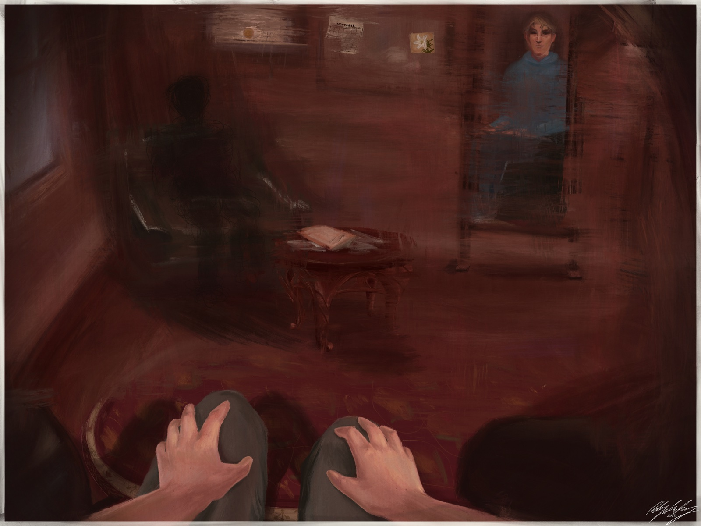
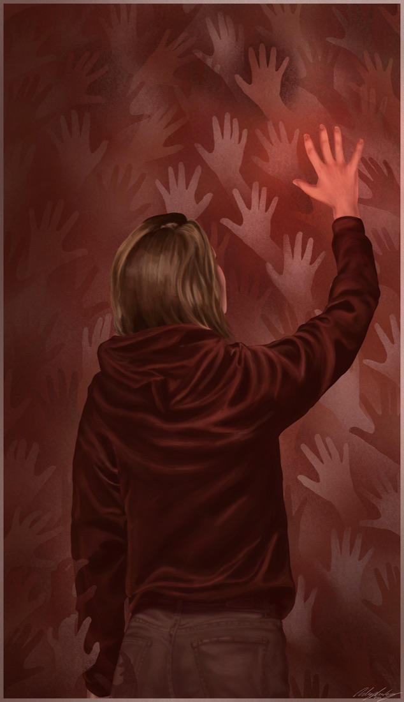
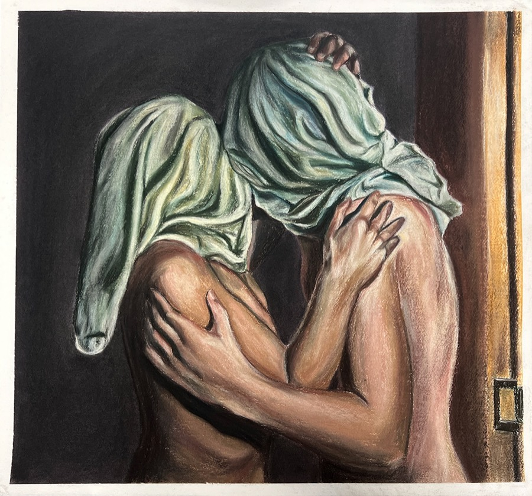
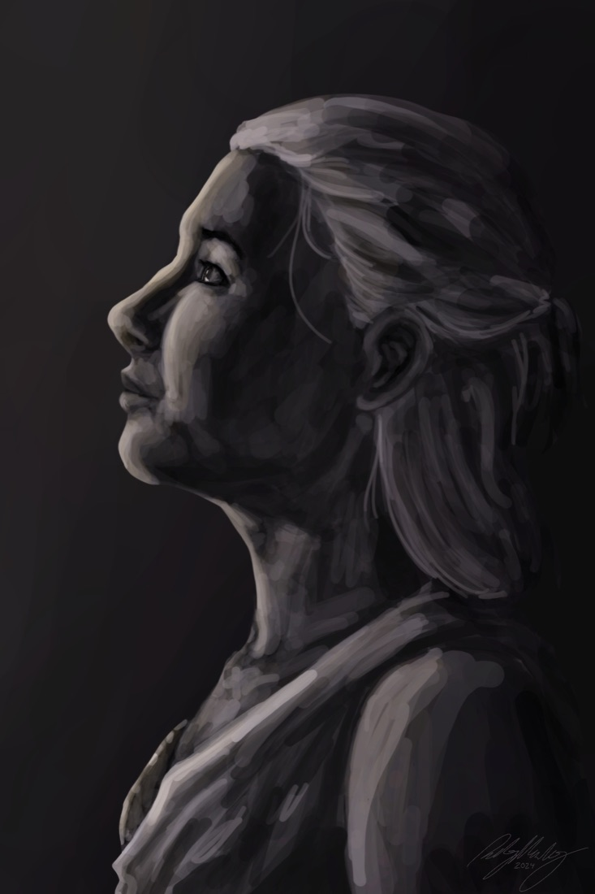
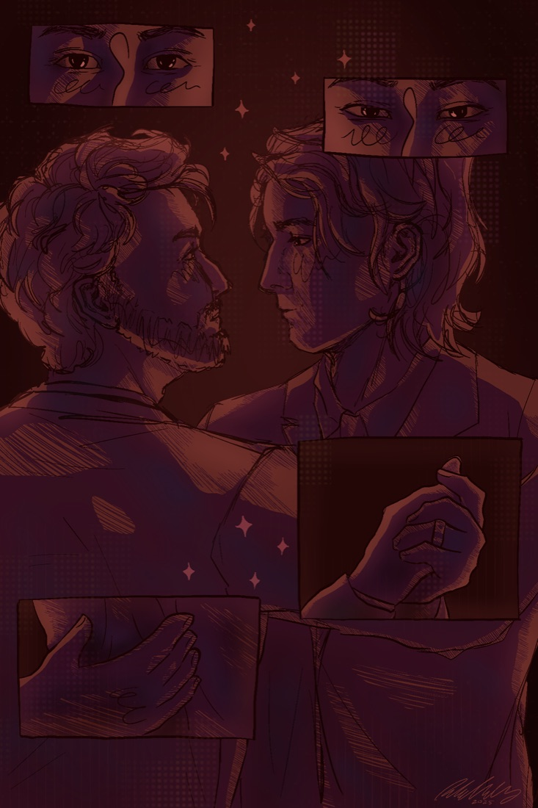
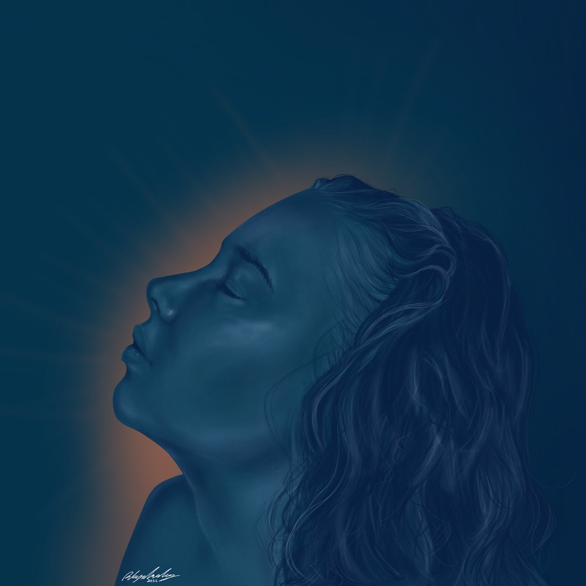

Incarnate · 2026
poems on perception, growth, and being
from the table of contents
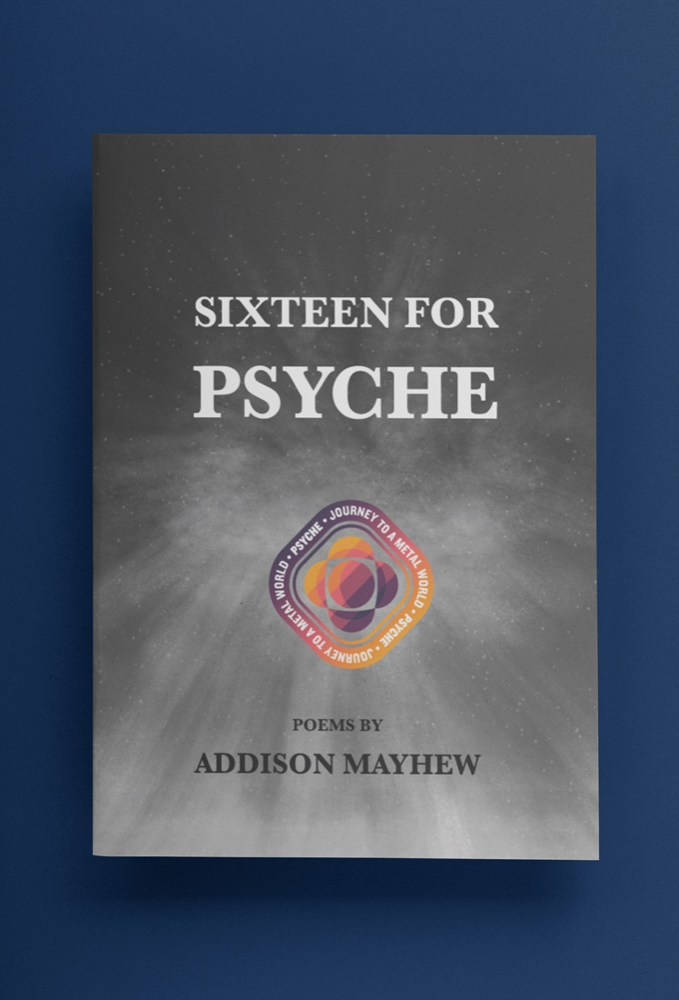
Sixteen for Psyche · poems
A poetry collection structured around phases of a space mission, moving from design to travel to encounter.
Constraint · Persistence · Exposure
for NASA’s Psyche Inspired program
loose pages / from the desk
Not everything needs a polished case study. This is the messier evidence: current projects, notebook scraps, half-built ideas, experiments, and whatever is covering the desk this week.
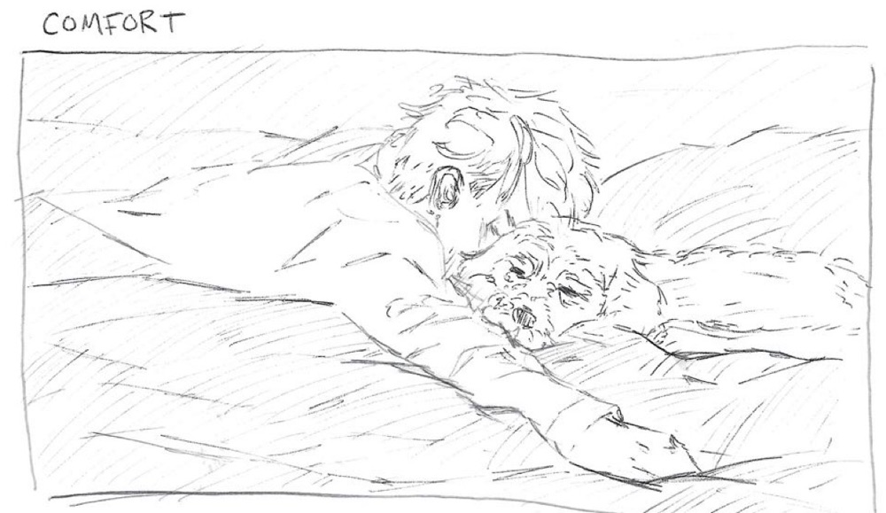
make the ugly version.
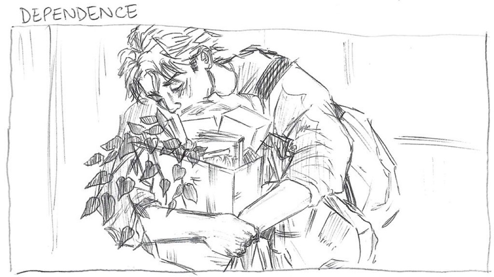
Put the fingerprints back. Texture. Voice. Humor. Imperfection. Emotional specificity. Whatever keeps it alive.
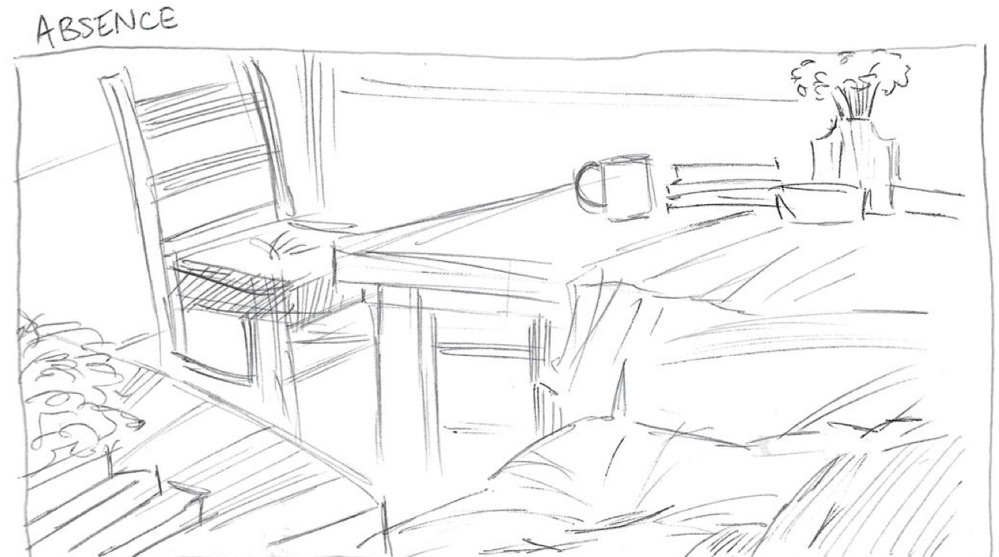
FYI:
Ideas rarely arrive finished. Most of them start as a sentence, a sketch, a screenshot, or a very convincing “hear me out.”
From the notebook
“I didn’t always understand what I was trying to say, only that it mattered enough to try.”
keep wandering.
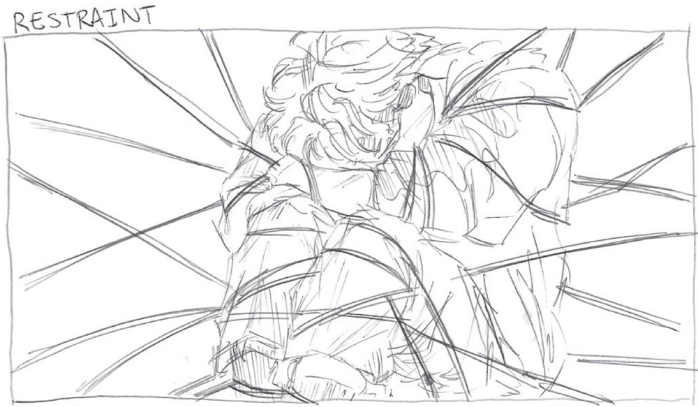
on to what’s next.
A brand, campaign, collaboration, visual world, strange experiment—or an idea that starts with “hear me out.”
Messages from this form come straight to me. You can also find me on LinkedIn.